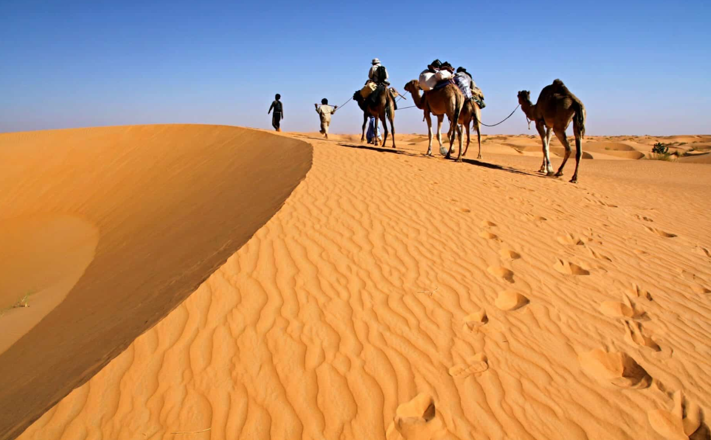

Un pays-carrefour entre Sahara et Sahel, façonné par les routes caravanières, les cités anciennes et la
construction
progressive d’un État moderne.

Caravanes transsahariennes et grands échanges
Caravanes transsahariennes
Pendant des siècles, le Sahara n’a jamais été un vide : il a été un espace de circulation. Les
caravanes reliaient
le Maghreb aux royaumes sahéliens en transportant du sel, des tissus, des denrées, mais aussi
des idées,
des savoirs et des traditions religieuses. Les étapes autour des points d’eau et des oasis
structuraient
les itinéraires et donnaient naissance à des lieux d’échanges.
Cités anciennes et manuscrits
Cités du désert
Des villes comme Chinguetti ont occupé une place importante dans l’histoire culturelle et
religieuse.
Elles ont conservé des bibliothèques et des manuscrits témoignant d’un héritage intellectuel
précieux.
Ces cités montrent comment commerce, religion et transmission du savoir se sont rencontrés dans
l’espace saharien.
Vers un État moderne
Évolutions modernes
L’histoire récente est marquée par la construction d’un État moderne, la croissance des villes
et l’importance
des ressources (mines, pêche, élevage) dans l’organisation économique. Comprendre cette
évolution permet
de relier le passé des échanges transsahariens à la réalité actuelle : développement, défis
sociaux
et rôle stratégique du pays dans la région.